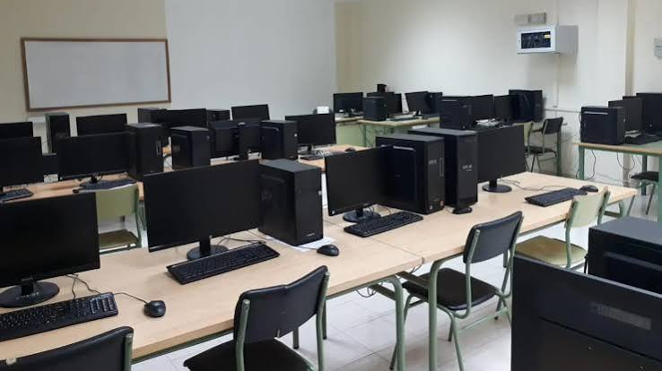

Soy Estudiante De Desarrollo de Aplicaciones Web (DAW)
Formación técnica orientada al desarrollo web integral full-stack, maquetación responsive y arquitectura de software.
A lo largo del ciclo he profundizado en la lógica de programación orientada a objetos con Java y desarrollo backend dinámico con PHP, creando aplicaciones estructuradas y eficientes. En el apartado frontend, trabajo con HTML5, CSS3 y JavaScript para la construcción de interfaces interactivas.
Asimismo, cuento con sólidas competencias en el diseño y administración de bases de datos relacionales (MySQL y Oracle PL/SQL), incluyendo el desarrollo de procedimientos almacenados, triggers y funciones, además de la gestión de proyectos con control de versiones mediante Git y GitHub.
Explorar proyectos de DAW
Mi camino y evolución en Desarrollo Web
Estudiar este ciclo en el centro ha sido mucho más que aprender a programar: ha sido descubrir de lo que soy capaz cuando me apasiona lo que hago. Recuerdo los primeros días frente a la pantalla, sintiendo esa mezcla de vértigo y curiosidad ante cada línea de código.
Con el tiempo, las aulas y los talleres se convirtieron en un espacio de crecimiento personal. He aprendido a no rendirme cuando un algoritmo no sale a la primera, a disfrutar del proceso de encontrar la solución a un problema difícil y a sentir el orgullo de ver un proyecto terminado desde cero. Cada hora invertida en el instituto, entre debates con compañeros y apoyo de los profesores, ha moldeado no solo mi perfil técnico, sino mi determinación y mi vocación por seguir aprendiendo cada día.